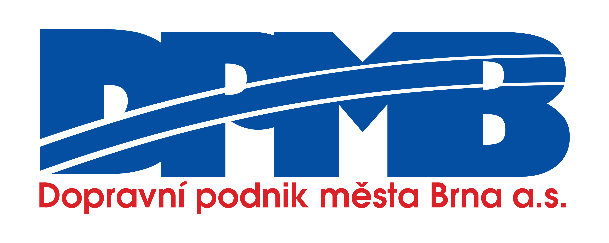

Procvičuj brněnské tramvaje
Nauč se trasy linek – kartičky i kvíz
Procvičuj pořadí a názvy zastávek
Poslechni si zastávky a udělej kvíz
Klikni na kartičku pro otočení
Poslechni si všechny zastávky s hlasem
Procvičuj zastávky formou otázek
Nejdřív poslechni, pak kvíz
Hlasy označené ★ znějí přirozeněji. Dostupné hlasy závisí na zařízení a prohlížeči.
Co je za problém?
Popis (nepovinné):